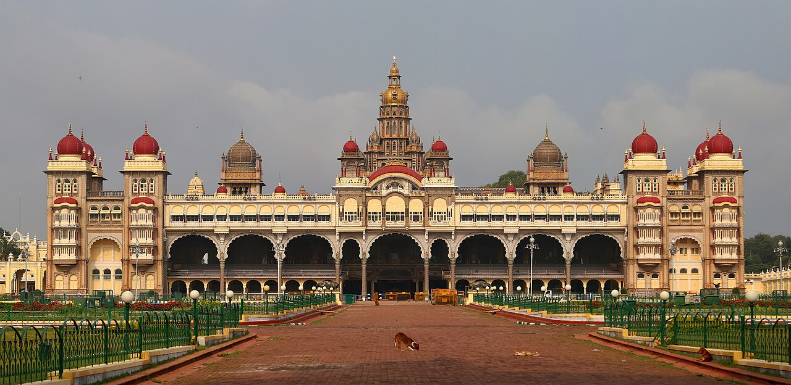
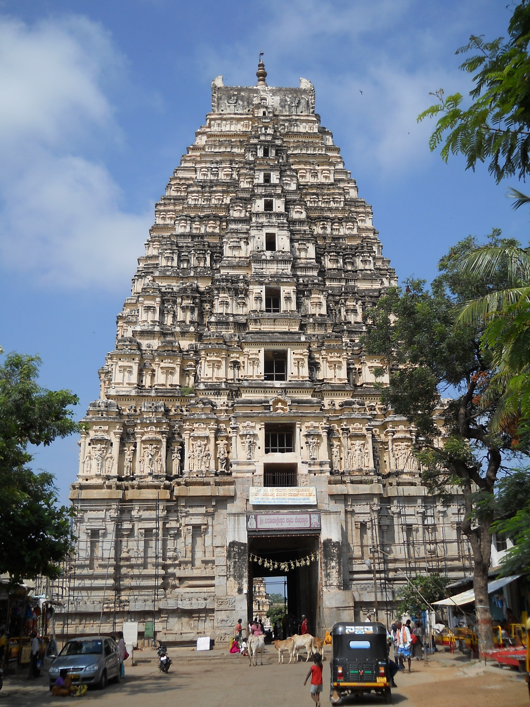
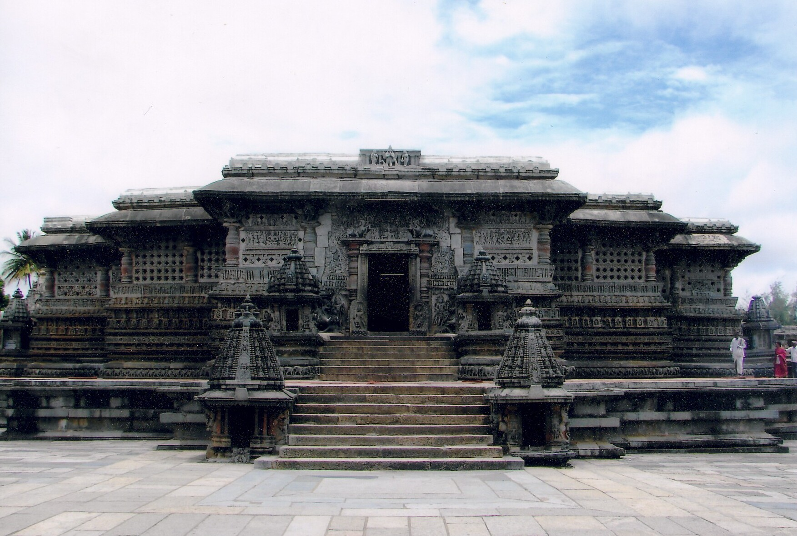
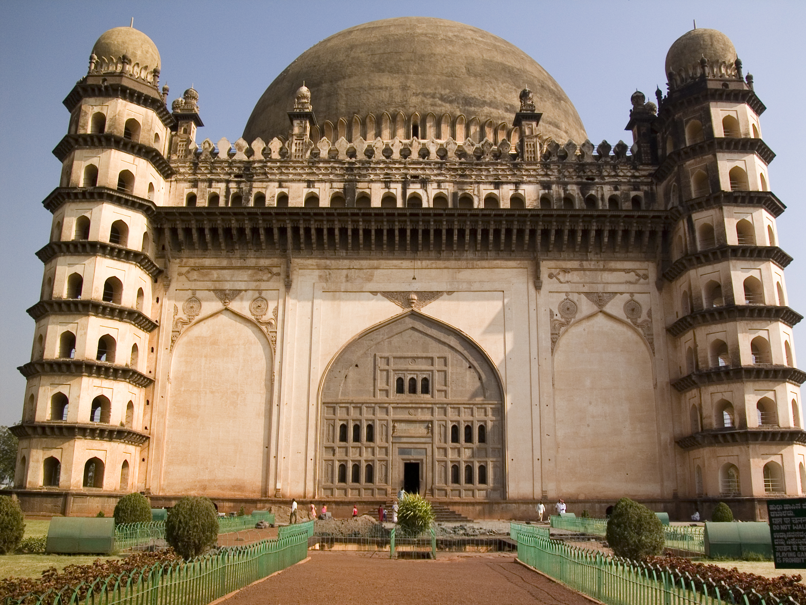
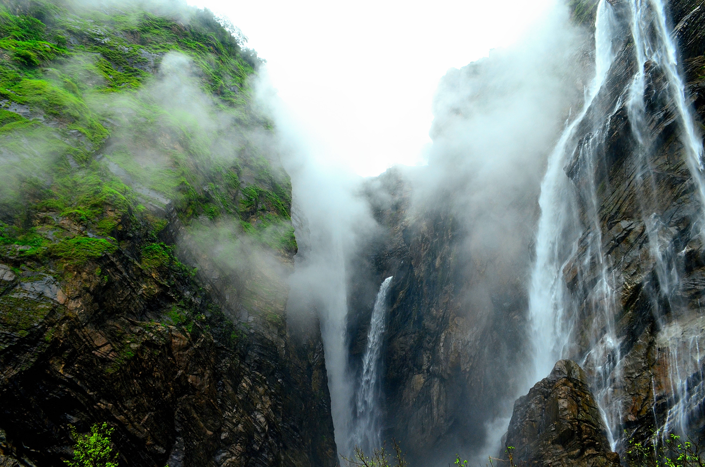
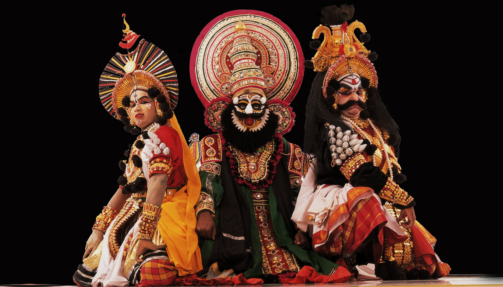

Mysore Palace (Amba Vilas)
ಮೈಸೂರು ಅರಮನೆThe royal seat of the Wadiyar dynasty, illuminated by 100,000 golden bulbs during the historic Mysuru Dasara festivities.
Crown Jewel of Karnataka Royalty
ಸುಸ್ವಾಗತ — ಕರುನಾಡ ಭೋಜನ ಸಂಭ್ರಮ
An evening of Karnataka's living history, majestic architecture, classical arts, and a royal festive feast.
To our respected professors, fellow students, researchers, staff members, and friends from all corners of India and across the world — we welcome you with open hearts to Karunada Habba.
In ancient lore, Karunadu reflects not just the fertile black soil of the Deccan, but Karune — the spirit of compassion, hospitality, and shared happiness. Whether tonight brings back cherished memories of home or introduces you to Karnataka's timeless heritage for the very first time, your presence makes this evening whole.
From medieval stone empires to cloud-kissed Western Ghats, experience Karnataka through its living marvels.
The royal seat of the Wadiyar dynasty, illuminated by 100,000 golden bulbs during the historic Mysuru Dasara festivities.
Crown Jewel of Karnataka Royalty
The golden capital of Emperor Krishnadevaraya, where diamonds were once weighed openly in bustling street bazaars.
UNESCO World Heritage Site
Star-shaped chloritic soapstone wonders sculpted over a century by master Hoysala craftsmen with unmatched micro-details.
UNESCO World Heritage 2023
The world's second-largest unsupported acoustic dome, where even the faintest whisper echoes 11 times across 44 metres.
Architectural Acoustic Marvel
India's breathtaking 253-metre plunge waterfall cascading in four magnificent streams: Raja, Rani, Roarer, and Rocket.
Tallest Plunge Waterfall in India
Vibrant mythological theatrical dance of coastal Karnataka, alive with towering headdresses, natural pigments, and roaring drums.
Living Epic Folk TraditionTwo thousand years of sovereign governance, pioneering architecture, and universal ideals.
Karnataka's first indigenous sovereign kingdom, established by King Mayurasharma. They made Kannada the language of royal administration and gave us the sacred Halmidi stone inscription.
Inventors of rock-cut Deccan architecture at Aihole and Badami cave temples. Their coronation grounds at Pattadakal blend North and South Indian stone styles.
A superpower whose realm stretched from Kaveri to the Godavari river. Arab travellers ranked them among the 4 greatest empires of the medieval world alongside Rome and China.
Under Emperor Sri Krishnadevaraya, Vijayanagara became an epicentre of global trade, classical literature, and the golden fortress of South Indian heritage.
Visionary patrons who laid the modern foundations for universities, dams, silk mills, and aerospace labs, transforming Mysuru into a model state.
Over 125 experimental stone temples at Aihole served as the architectural laboratory where sculptors invented pillars, shikharas, and mandapas across four centuries.
The iconic monolithic granite chariot with turning stone axles and the 56 Sa-Re-Ga-Ma musical stone pillars that resonate with musical notes when gently tapped.
Intricate soapstone friezes that capture celestial dancers, mythical yalis, and epics with jewellery so delicately undercut that pins can pass behind the stone beads.
Master engineer who designed the Krishna Raja Sagara Dam, automatic floodgates, and Mysore University. His birthday on September 15 is celebrated nationwide as Engineers' Day.
Bengaluru serves as India's scientific nerve centre. The Chandrayaan-3 lunar landing mission was conceived, tracked, and commanded right from Karnataka's soil.
The living crafts, pulsating beats, and fragrant heritages that define Karnataka's soul.
Revered as the Father of Carnatic Classical Music, Sri Purandara Dasa structured the foundation, graded exercises (Sarale Varishe), and foundational ragas sung across India today.
A pulsating devotional folk dance of the Kuruba community. Performers beat heavy drums while weaving acrobatic circles with boundless energy and synchrony.
Woven with 100% natural mulberry silk and authentic gold zari threads, Mysore Silk sarees have carried the royal seal of quality for over a century.
Globally celebrated for fragrant Mysore Sandalwood oil and soap crafted since 1916, filling temples and royal courts with calming, divine aroma.
Brought from Yemen by Baba Budan in the 17th century, the lush hills of Chikkamagaluru and Coorg produce over 70% of India's world-renowned shade-grown coffee.
One of the world's most ancient classical languages, with two millennia of unbroken literary heritage.
Officially designated a Classical Language of India, Kannada boasts epigraphical roots dating back to the 450 CE Halmidi inscription and the 850 CE landmark literary treatise Kavirajamarga.
In the 12th century, philosopher Basavanna and the Sharanas sparked a historic democratic renaissance through short, powerful prose-poems (Vachanas). Their guiding tenet "Kayakave Kailasa" (Work is Divine Worship) established the world's earliest open assembly of ideas — the Anubhava Mantapa.
Delight your batchmates and faculty tonight! Tap any phrase card to hear it spoken.
Fascinating historical nuggets to spark warm dinner table conversations.
When the Maharaja sat down for lunch unexpectedly, chef Kakasura Madappa quickly combined gram flour, sugar syrup, and boiling ghee. The Maharaja was so thrilled that he named it "Mysore Paaka" and ordered sweet stalls set up for the public!
Found in Hassan district, this Kadamba stone inscription is the oldest surviving proof of Kannada prose composition, demonstrating an advanced administrative literary language over 15 centuries ago.
Designed in 1965 by writer Ma. Ramamurthy, the yellow band represents turmeric — peace, prosperity, and auspiciousness; the red band represents kumkuma — valour, revolution, and indomitable courage.
Celebrated nationwide on the birthday of Karnataka's legendary statesman-engineer Sir M. Visvesvaraya, who built floodgates and dams, and was honoured with both knighthood and the Bharat Ratna.
Karunada Habba Celebration • IIT Gandhinagar Campus